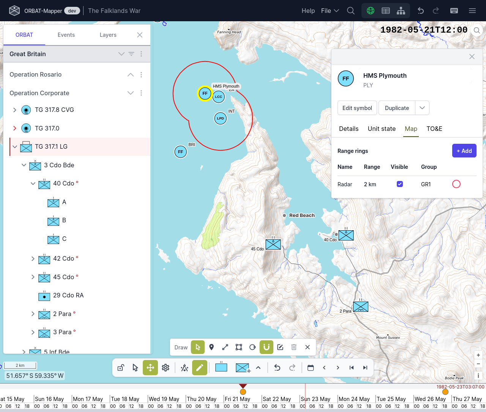
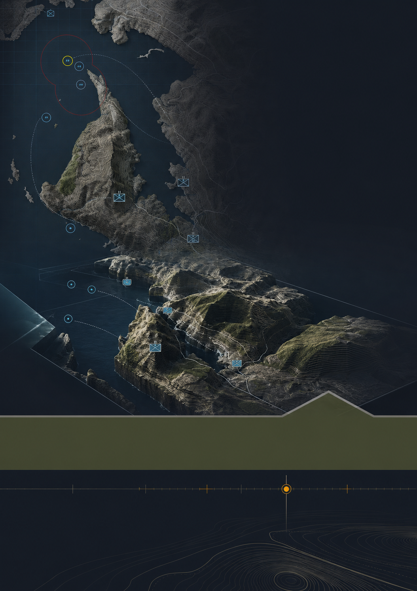
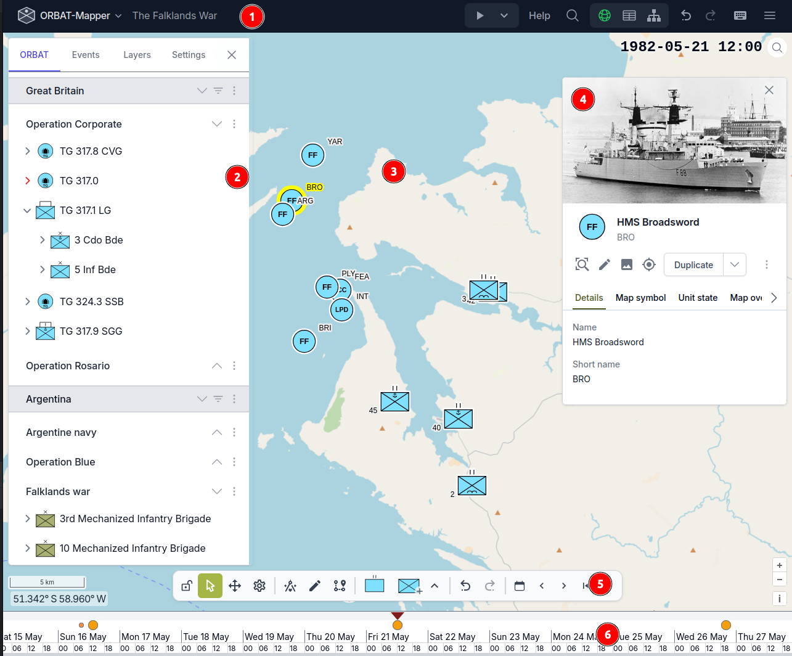
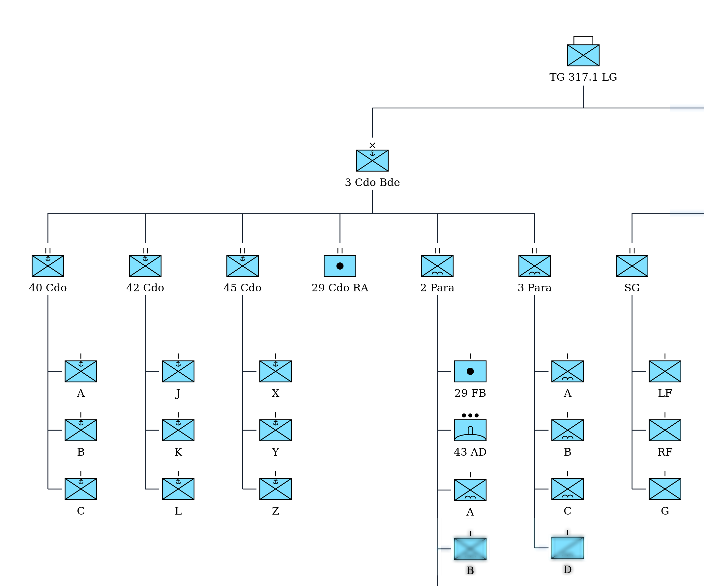
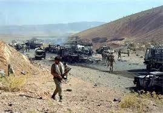

طرحریزی عملیات جدید
تعریف منطقه، یگانها، علائم، فازها، وظایف و رخدادها در یک سناریوی زمانمند.

دو مسیر اصلی برای ساخت و مطالعه سناریوهای عملیاتی

تعریف منطقه، یگانها، علائم، فازها، وظایف و رخدادها در یک سناریوی زمانمند.
تبدیل اسناد، کالکها و روایت رخدادها به سناریویی قابل مشاهده و بازپخش.
ساجد، عملیات را به یک نقشه ثابت محدود نمیکند. تغییر موقعیتها، فاز فعال، رخدادها و شرایط محیطی در طول زمان ثبت میشوند و همان سناریو را میتوان در نمای سهبعدی بررسی کرد.
هر جزء، به مکان و لحظه مشخصی از عملیات متصل است.
از مسیر و محدوده تا موضع، هدف و نشان یگان

هر عارضه یا علامت میتواند به یگان، مرحله، وظیفه یا رویداد مشخصی از سناریو وابسته شود.
ارتباط سلسلهمراتب یگانها با سناریو و وضعیت صحنه
در ساجد میتوان ساختار یگانها، زیرمجموعهها، نفرات، تجهیزات و منابع را تعریف و در سناریو نگهداری کرد.

تقسیم عملیات به بخشهای قابل مدیریت و بازبینی
برای هر فاز میتوان بازه زمانی، هدف، یگان مسئول، وظایف و وضعیت صحنه را تعیین کرد. رویدادهای هر مرحله در همان بازه دیده میشوند.
تعریف نتیجه مورد انتظار و محدوده عملیاتی.
تعیین مسئولیت و ارتباط آن با ساختار یگانها.
ثبت زمان اجرا، وضعیت پیشرفت و رخدادهای وابسته.
هر رخداد، زمان، مکان، شرح و یگانهای مرتبط خود را دارد.
رخدادها فقط یادداشتهای جانبی نیستند؛ آنها حلقه اتصال روایت، موقعیت و تغییرات زمانی صحنهاند.
عملیات جدا از محیطی که در آن اجرا میشود بررسی نمیشود.
وضعیت هوا، دید، دما، باد و شرایط زمین را میتوان برای کل سناریو یا مقاطع مختلف آن ثبت کرد.
ثبت تغییرات دما در بازههای زمانی سناریو.
بررسی محدودیت دید و اثر آن بر مشاهده صحنه.
ثبت جهت و سرعت باد در مقطع انتخابشده.
تعریف شرایط جوی و تغییر آن در خط زمانی.
شرایط میتوانند در طول عملیات تغییر کنند.
مقاطع مختلف سناریو کنار هم بررسی میشوند.
اطلاعات محیطی در نقشه و شبیهساز قابل استفادهاند.
از وضعیت اولیه تا تغییرات پایانی، روی یک خط زمانی واحد
مشاهده جابهجایی و وضعیت واحدها در هر لحظه.
تشخیص مرحله جاری و وظایف وابسته به آن.
پیگیری روند شکلگیری و تغییر عملیات.
برای مطالعه عملیاتهای گذشته، مخاطب بهجای دیدن یک نقشه نهایی، مسیر تغییر صحنه را دنبال میکند.
مشاهده همان مقطع زمانی در محیطی گرافیکی و قابل بررسی
موقعیت یگانها، مسیر حرکت، عوارض زمین و تغییرات زمانی در نمای سهبعدی بازسازی میشوند.
ارزش اصلی این نما در ارتباط مستقیم آن با کالک است: همان سناریو، همان زمان و همان وضعیت صحنه.
تبدیل منابع تاریخی به سناریویی قابل مطالعه و بازپخش
اسناد، نقشهها، ساختار یگانها و توالی رخدادها کنار هم قرار میگیرند.

کاربر میتواند عملیات را از وضعیت اولیه تا مراحل پایانی دنبال کند.
پشتیبانی از استقرار داخلی و بازبینی گروهی سناریوها
استفاده در محیطهایی که دسترسی پایدار به اینترنت ندارند.
بهرهبرداری از سامانه در زیرساخت سازمانی و کنترلشده.
تعیین سطح دسترسی متناسب با نقش و مسئولیت کاربران.
ثبت فعالیتهای اصلی برای مرور، اصلاح و بازبینی سناریو.
این قابلیتها بستر بهرهبرداری از محصول را فراهم میکنند؛ اما هسته ساجد همچنان طراحی و بازآفرینی عملیات در پیوند میان نقشه، زمان و نمایش سهبعدی است.
سناریویی زمانمند است که میتوان آن را طراحی کرد، به حرکت درآورد، بازآفرینی کرد و دوباره مورد بررسی قرار داد.